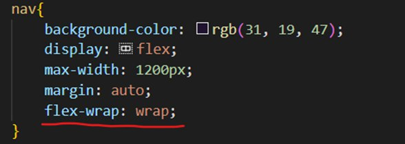

johdanto
Nyt opimme CSS-syntaksin:
.png)
Siinä kaikki, nyt tiedät syntaksin. CSS-syntaksi on hyvin yksinkertainen, se koostuu vain valitsimesta ja ominaisuuksista.
Tiedoston luominen ja yhdistäminen
Luo css-kansioon tiedosto tunnisteella .css - nimi voi olla mikä tahansa, tärkeintä on ymmärtää, mille html-tiedostoille ne on tarkoitettu.
Ja viimeinen silaus on sisällyttää .css-tiedosto head-tunnisteeseen komennolla:
Tyylien määrittäminen .css-tiedoston
Katsotaanpa esimerkkiä:
Meillä on 5 kappaletta, joista 3 on määritetty class, ja yhdessä on class ja id.
kissa
kissa
kissa
kissa
kissa
- Määritä sininen tekstin väri "p"-tunnisteeseen
- Nyt kaikki sivun kappaleet ovat sinisiä
kissa
kissa
kissa
kissa
kissa
- Ja nyt haluan joidenkin niistä olevan vihreitä
- Määritä tunnisteille luokka, jos haluamme muuttaa useiden objektien ominaisuuksia (piste ennen sanaa "teksti" tarkoittaa, että sana sen jälkeen on luokan nimi).
kissa
kissa
kissa
kissa
kissa
- Ja määrittääkseni ominaisuudet mille tahansa elementille, käytän id:tä.
- css-tiedoston id on merkitty hashilla "#"
kissa
kissa
kissa
kissa
kissa
Voit myös määrittää ominaisuuksia useille valitsimille kerralla:
Tai vain valitsimet, jotka ovat muiden valitsimien sisällä:
Hierarkia
Kuten olet ehkä jo huomannut, jos esimerkiksi määrität tunnukselle eri värin, se korvaa värin, joka on määritetty saman objektin luokalle. Tätä kutsutaan hierarkiaksi, ja se näyttää suunnilleen tältä:
id > class > tunniste
Eli id-ominaisuuksilla on enemmän painoarvoa kuin luokalla, ja luokka on enemmän kuin pelkkä tunniste.
sivuston banneri ja navigointi
Pienennä kuva sopivan kokoiseksi:
Aseta bannerin ja navigoinnin värit sekä sivuston taustaväri:
• Poista sisennys määrittämällä margin: 0; body tag:ssa
Muuta tekstin väriä/kokoa/tyyliä:
Kohdista kuva ja sivuston nimi pystysuoraan ja siirrä painikkeet vaaka-asentoon:
Lisää navigointipainikkeisiin padding ja kuvan margin-left.
Haluan myös, että bannerilla on leveysrajoitus:
Nyt banneri ja painikkeilla varustettu paneeli voivat kutistua ja laajentua vain enintään 1200 pikselillä.
Keskitä koko body:n sisältö ja kaikki on valmis.

Ja viimeinen vaihe on, että teen koko navigointipainikkeen korostettuna hiiriasentoon (tausta ja tekstin väri muuttuvat).
responsiivinen verkkosivu
• Kuvien ja joskus tekstin koko vaihtelee näytön koon mukaan
• Pienennettynä jotkin elementit katoavat tai muuttuvat
• Elementeillä varustetut lohkot – “elastinen”
Kaikki tämä on otettava huomioon etukäteen, jopa HTML-skeeman luomisvaiheessa
Tältä verkkosivumme näyttää nyt puhelimella:
- Lisää wrap-ominaisuus

Nyt kaikki on melkein valmis, mutta responsiivisuuden saavuttamiseksi meidän on käytettävä laukaisuja, kun muutamme näytön kokoa. Tätä varten on parasta luoda erillinen tiedosto, koska triggerit tehdään yleensä näyttökokoille (puhelin, tabletti ja tietokone).
Mutta yksi asia riittää meille - puhelimelle.